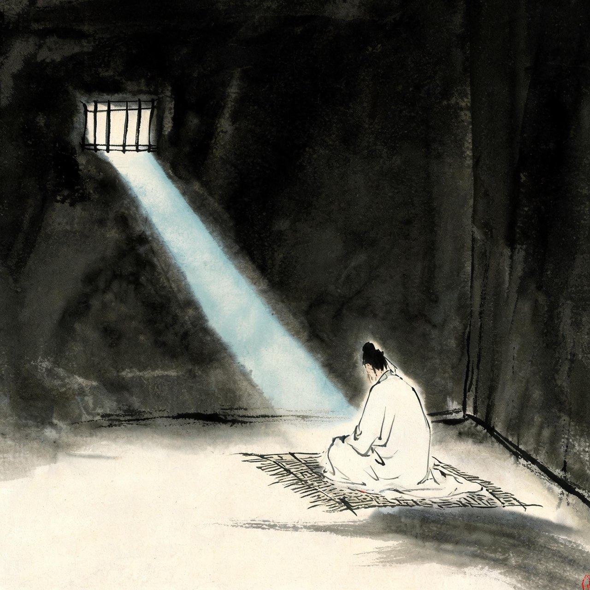
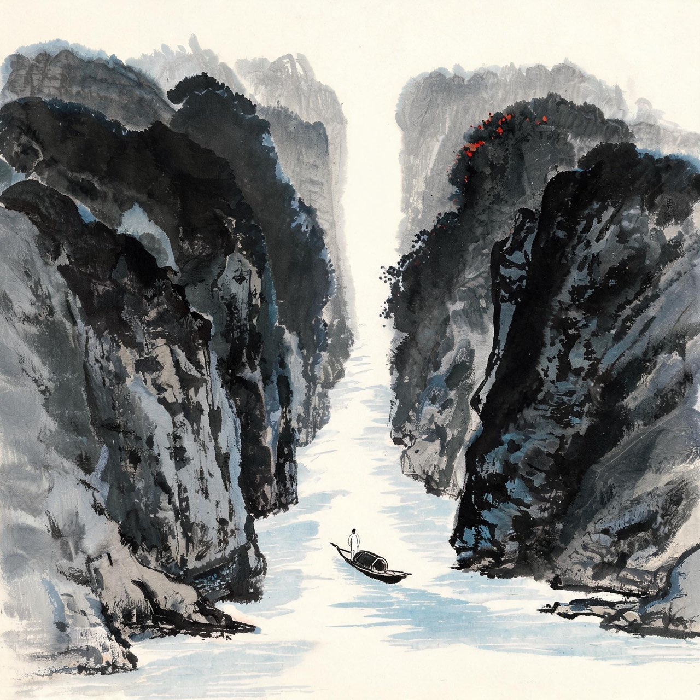

李白 · 755-759
乱世
从仙到囚
屏风叠下
天宝十四载冬，渔阳鼙鼓动地而来。安禄山反于范阳，铁骑南下，东都洛阳旬月而陷。
消息传到江南时，你五十五岁。中原板荡，两京震动，逃难的人流堵满了官道。你带着妻子宗氏，随人流南奔，一路辗转，最后上了庐山，在屏风叠下筑室隐居。
屏风叠，五老峰下。你年轻时写过的瀑布还在头顶飞流，山下的天下已经换了人间。
你隐不住。山中的日子，你盯着北方发呆——朝廷在溃败，皇帝在西逃，你一生的抱负还没施展，天下先塌了。
就在这时，山下有人三次上山来请你出山。
注
- 宗氏：李白第二任妻子，前宰相宗楚客孙女，约天宝年间结缡——结缡年份史无明文
- 屏风叠：庐山五老峰东侧九叠屏，李白《送内寻庐山女道士李腾空》有'多君相门女，学道爱神仙'句可证宗氏在庐山
- 三次上山聘请：李白《与贾少公书》自述'王命崇重，大总元戎，辟书三至，人轻礼重'
请你的人，是永王李璘——玄宗第十六子，奉旨经营长江防线，水军东下，楼船蔽江。三次遣使上山，你五十七岁，热血未冷。你以为的图景是：谢安石东山再起，为君谈笑静胡沙。你以为这是报国的机会——
永王东巡歌（其二）
三川北虏乱如麻，四海南奔似永嘉。
但用东山谢安石，为君谈笑静胡沙。
注
- 永王东巡歌共十一首，此其二；三川指黄河、洛水、伊水，代指中原；永嘉用西晋永嘉之乱典
- 谢安石：东晋谢安，淝水之战运筹帷幄，谈笑退敌——李白诗中屡以谢安自比
- 入幕动机：李白诗文自述均以平乱报国为志（《与贾少公书》'殷深源庐岳十载……谢安高卧东山，苍生属望'），后人聚讼其政治判断力，不坐实

浔阳狱中
你看错了一件事：永王的水军不是勤王之师，是皇位之争的棋子。
至德二载二月，永王兵败丹阳。你仓皇南逃，逃到彭泽，追兵到了。
罪名是附逆。你，一个五十七岁的老人，被带上枷锁，投进浔阳大狱。
狱中的你给很多人写信申辩，妻子宗氏在江西一带四方奔走求援。江南宣慰使崔涣与御史中丞宋若思推覆其狱，认为你罪轻可赦——宋若思放了你，还辟你入幕，你以囚徒之身替他起草文表。
然而朝廷的结论下来了：长流夜郎。
那个写「天生我材必有用」的人，如今一纸判决，发配万里之外的瘴疠之地。
狱中夜里，月光照进栅栏。你想起年轻时写的月亮：峨眉山月半轮秋。月亮还是那轮月亮。
注
- 狱中申辩诗多篇存世：《系寻阳上崔相涣三首》《万愤词投魏郎中》等，内多自辩与悲愤之语；'寻阳'为唐代写法
- 宋若思释囚辟参谋：见李白《为宋中丞自荐表》等，短暂获释在至德二载秋
- 宗氏奔走：见于时人诗文追述与后世考订，细节有演绎

夜郎万里
乾元元年春，五十八岁的你从浔阳启程，前往流放地：夜郎。
夜郎在黔中，唐人眼里的瘴疠之乡。从浔阳溯江而上，过江夏，过洞庭，入三峡——这是你年轻时意气风发走过的路，此刻一寸一寸倒着走回去。
年轻时出峡，是「山随平野尽」；如今溯流，两岸的高山一重一重压下来，像命运合拢的手掌。
江夏的旧友为你置酒。你已经喝不出味道了。有少年问你诗，你说：我年轻的时候，也问过别人这样的问题。
妻子宗氏的弟弟送你到浔阳江边。你写下「拙妻莫邪剑，及此二龙随」——夫妻命运如二龙相随，一同被拖向命运深处。你一生写过大笑、大醉、大鹏、大风，几乎没写过大哭。
这是第一次。
注
- 流放路线：浔阳—江夏—洞庭—三峡方向，行至夔州遇赦，未至夜郎即返——场景地名取流放地'夜郎'（实际行至夔州遇赦）
- 送别者：妻弟宗璟随宗氏送行至乌江（浔阳江），《窜夜郎于乌江留别宗十六璟》题序可证；'拙妻莫邪剑，及此二龙随'喻夫妻同谪
- 「有少年问你诗」一段为叙事演绎
- 夜郎：唐夜郎县在今贵州桐梓一带（一说湖南新晃），取桐梓说
乾元二年春，你走到白帝城。就在这里，赦书到了——关中大旱，朝廷大赦天下：死罪从流，流罪以下，一切放免。
早发白帝城
朝辞白帝彩云间，千里江陵一日还。
两岸猿声啼不住，轻舟已过万重山。
注
- 遇赦：乾元二年（759）春，因关中大旱降赦，《新唐书·肃宗纪》三月丁亥有载；李白行至夔州（白帝城）遇赦东归
- 全篇二十八字无一字言喜，而狂喜之情溢于纸外——历代评家所谓'如此迅捷，则轻舟之过万山不待言矣'
- 此诗系于流放遇赦之际，则是唐诗中最著名的一次死里逃生；系年另有异说，此处不取